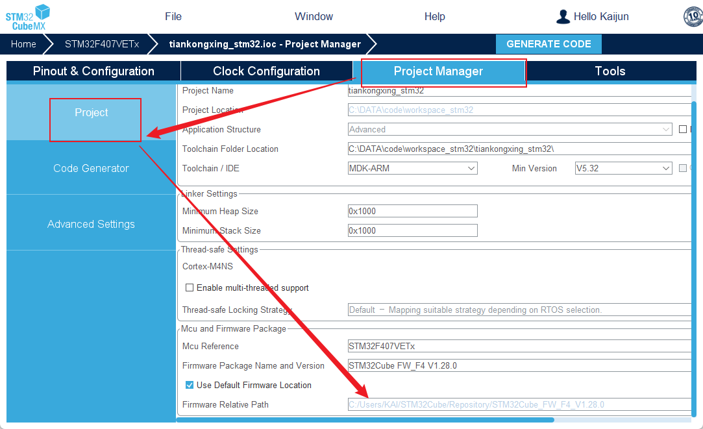
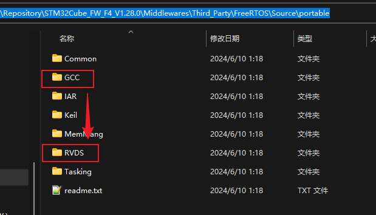
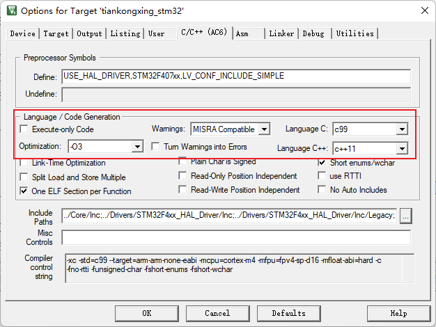

<!DOCTYPE lake>
<h2 data-lake-id="VYamN" id="VYamN"><span data-lake-id="u0c82c71e" id="u0c82c71e">COMPILE6下编译</span></h2><p data-lake-id="u32ab3b72" id="u32ab3b72"><span data-lake-id="u08c60581" id="u08c60581">CubeMX生成的FreeRTOS工程默认使用的编译器5，而我们平时所使用的编译器是version 6, 并且使用version6编译速度会更快， 所以我们需要对工程进行一定的修改。</span></p><p data-lake-id="u5194a87c" id="u5194a87c"><span data-lake-id="u83c9c31f" id="u83c9c31f">​</span><br/></p><h3 data-lake-id="gWkdw" data-lake-index-type="2" id="gWkdw"><span data-lake-id="u781ac999" id="u781ac999">找到cubemx固件库安装路径</span></h3><p data-lake-id="u43af8eb9" id="u43af8eb9"></p><h3 data-lake-id="fNh0a" data-lake-index-type="2" id="fNh0a"><span data-lake-id="u339b4868" id="u339b4868">找到FreeRTOS接口文件夹</span></h3><ol list="ufa0af465"><li data-lake-id="ue0f91b49" fid="u4d1be368" id="ue0f91b49"><span data-lake-id="u2ece855e" id="u2ece855e">将</span><span data-lake-id="ub76a7609" id="ub76a7609" style="color: #DF2A3F">GCC/ARM_CM4F</span><span data-lake-id="u347be69f" id="u347be69f">文件夹中的内容复制到</span><span data-lake-id="u6568d6ae" id="u6568d6ae" style="color: #DF2A3F">RVDS/ARM_CM4F</span><span data-lake-id="u70c9a055" id="u70c9a055">文件夹中</span></li><li data-lake-id="ud2216d3e" fid="u4d1be368" id="ud2216d3e"><span data-lake-id="u8f25663a" id="u8f25663a">将</span><span data-lake-id="u64c6259f" id="u64c6259f" style="color: #DF2A3F">GCC/ARM_CM4F</span><span data-lake-id="ufd6161ab" id="ufd6161ab">文件夹中的内容复制到</span><span data-lake-id="uaf7df5dd" id="uaf7df5dd" style="color: #DF2A3F">RVDS/ARM_CM4F</span><span data-lake-id="u8a1b6265" id="u8a1b6265">文件夹中</span></li><li data-lake-id="u39929c13" fid="u4d1be368" id="u39929c13"><span data-lake-id="ucbcd257b" id="ucbcd257b">将</span><span data-lake-id="u0d8bc2a6" id="u0d8bc2a6" style="color: #DF2A3F">GCC/ARM_CM4F</span><span data-lake-id="uae666691" id="uae666691">文件夹中的内容复制到</span><span data-lake-id="u4c938485" id="u4c938485" style="color: #DF2A3F">RVDS/ARM_CM4F</span><span data-lake-id="u3275b0d6" id="u3275b0d6">文件夹中</span></li></ol><p data-lake-id="uac8daba9" id="uac8daba9"></p><p data-lake-id="u8263dae6" id="u8263dae6"><br/></p><p data-lake-id="u6f836e4f" id="u6f836e4f"><span data-lake-id="uf1507954" id="uf1507954">修改完成之后，记得在cubemx中重新生成代码。</span></p><p data-lake-id="uf6f662f5" id="uf6f662f5"><span data-lake-id="u8b8f09bc" id="u8b8f09bc">修改完成之后，记得在cubemx中重新生成代码。</span></p><p data-lake-id="u0f7af052" id="u0f7af052"><span data-lake-id="u97db10e3" id="u97db10e3">修改完成之后，记得在cubemx中重新生成代码。</span></p><p data-lake-id="uec75b173" id="uec75b173"><span data-lake-id="u6febf090" id="u6febf090">​</span><br/></p><h3 data-lake-id="UsSmh" data-lake-index-type="2" id="UsSmh"><span data-lake-id="uae67033d" id="uae67033d">查看编译选项</span></h3><p data-lake-id="ub59c34cb" id="ub59c34cb"></p><p data-lake-id="ub77e4753" id="ub77e4753"><br/></p><p data-lake-id="u5c8d73bd" id="u5c8d73bd"><span data-lake-id="u3a0204b4" id="u3a0204b4">按照上述步骤编译就不会有问题了</span></p>